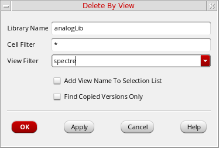
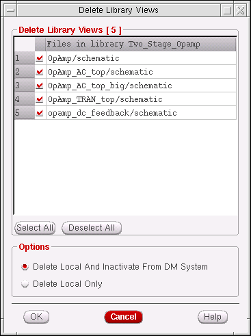
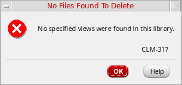

Deleting Cells Using Filters
You can delete cellviews or group of cells from your local directory or from both the local directory and the current design management repository. You can delete all views for a cell or only those views for versions you have copied.
To delete views for a given cell:
- Select the view you want to delete.
-
Choose Edit – Delete By View.
The Delete By View form appears . The name of the selected library appears in the Library Name field.
 -
In the Cell Filter field, type a filter string for the cells you want to delete.
For example, type*to indicate all cells orp*to indicate all cells beginning with a lowercase p. -
In the View Filter drop-down list, type a filter string for the views of these cells you want to delete, or select a view name from the drop-down list.
- If you want to delete only cells and views that you copied previously, select the Find Copied Versions Only check box.
-
Click OK.
The Delete Library Views form appears. The cellviews that match the criteria you specified on the Delete By View form.
If no cellviews that match the criteria are found, the No Files Found To Delete form appears. Click OK to close this form and return to the Delete By View form to specify new criteria. - On the Delete Library Views form, select one of the following Options:
- Click OK.
The selected cellviews are deleted.
The following are some possible circumstances that might generate error messages when you try to delete a cellview from a library:
- If you try to delete a read-only library, an error message appears, indicating that the process of deleting by view failed.
- In rare instances, the MPS (Message Passing Subsystem) server (used by the Virtuoso Studio design environment) that stores the directory for the library you specified might be down. In this case, an error message appears, indicating that the library from which you want to delete a view is not found.
- If you do not specify a cell or view in the Cell Filter or View Filter fields, an error message appears, indicating that a cell or view name is missing.
- If you specify a name for a library, cell, or view that does not exist, an error message appears, indicating that no files were found.
Related Topics
Return to top